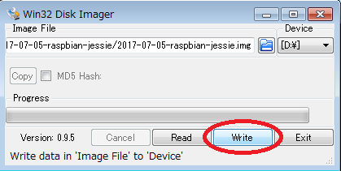
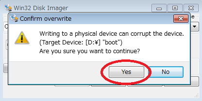
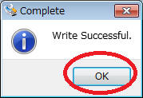
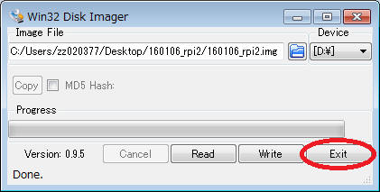
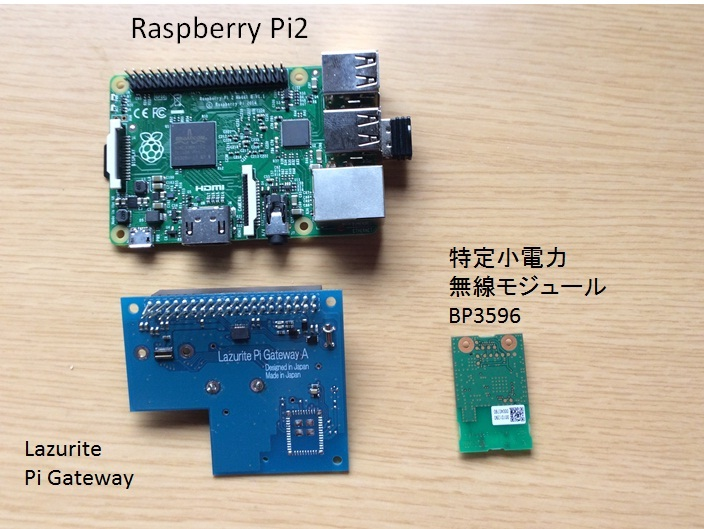
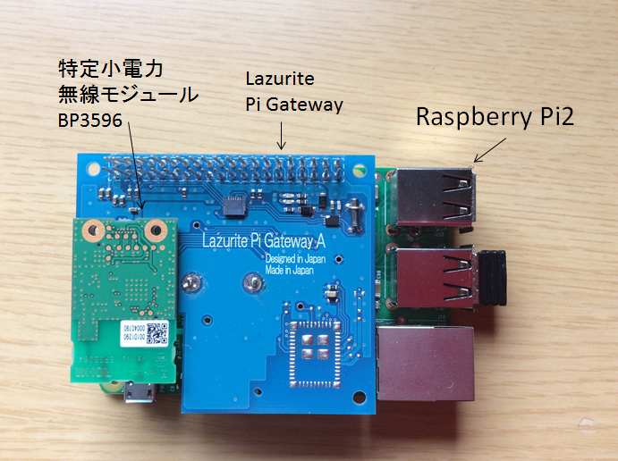
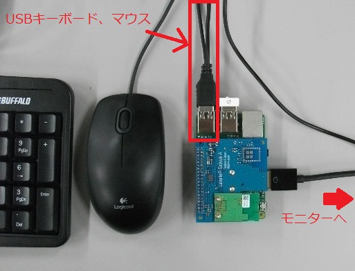
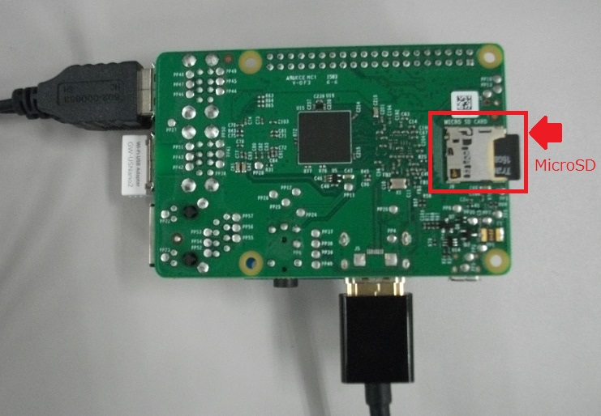
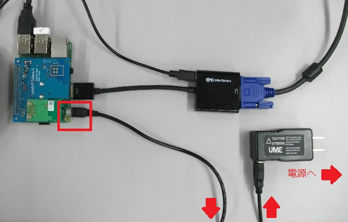

1. Raspberry Piの公式サイトから最新のRasbianまたはNOOBSをダウンロードしてRaspberry Piを立ち上げます。
２．ダウンロードが完了後、Win32DiskImagerを起動してマイクロSDカードに書き込みます。

『Yes』をクリック後、書き込みが終了したら『OK』→『Exit』をクリックします。

 
３．Raspberry PiとLazurite Pi Gatewayを組立てます。
組立て前

組立て後

配線後

マイクロSDの差し込み

Raspberry PiにDCアダプタを接続し、電源を入れます。

Raspberry Piが立ち上がります。